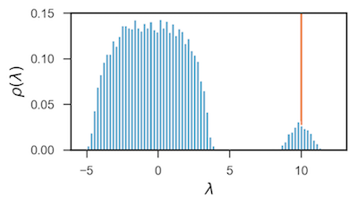

dynamicalab.drawing.plot_spectrum¶
-
dynamicalab.drawing.plot_spectrum(ax, matrix_generator, n_networks=20, nbins=100, vals=[], axvline_color='#ef8a62', bar_color='#67a9cf', normed=True, xlabel='$\\lambda$', ylabel='$\\rho(\\lambda)$', label_fontsize=13)[source]¶ Plot an histogram of the density spectrum of a family of matrices.
Parameters
- ax : Matplotlib Axes object
- Draw the spectrum in the specified Matplotlib axes.
- matrix_generator : function
- Random generator of the random matrices. Check the example to convert networks to matrices.
- n_networks : int : (default=20)
- Number of networks to sample the statistics
- n_bins : int : (defualt=100)
- Number of bins of the histogram.
- vals : list : (default=[])
- Draw a vertical line for each value in the list
- axvline_color : str or list : (default=”#ef8a62”)
- If a string, each vertical lines will be this color. If a list, it gives the color of each vertical line for elements of
vals, and must be the same length asvals. - bar_color : str : (default=”#67a9cf”)
- Fill color of the bars of the histogram.
- normed : Bool : (default=True)
- If
True, the integral of the histogram is equal to one. - xlabel : str : (default= \(\lambda\) )
- Label of the X axis.
- ylabel : str :
- Label of the Y axis.
- label_fontsize : int : (default=13)
- Fontsize of the labels
Example
import networkx as nx import dynamicalab.drawing as draw import matplotlib.pyplot as plt import seaborn as sns import numpy as np def matrix_generator(): G = nx.erdos_renyi_graph(20,0.5) return nx.to_numpy_matrix(G) sns.set(style="ticks") fig = plt.figure(figsize=(4,2)) ax = plt.gca() draw.plot_spectrum(ax, matrix_generator, n_networks=1000, nbins=80, vals=[20*0.5], normed=True, label_fontsize=13)